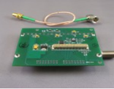
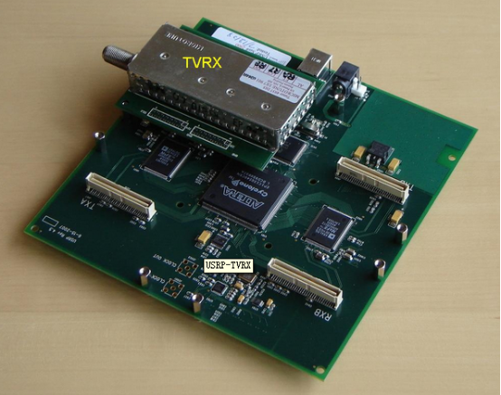
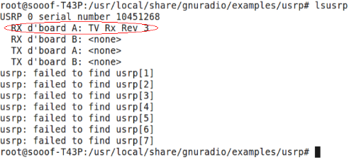
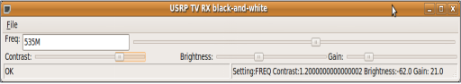
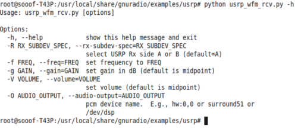
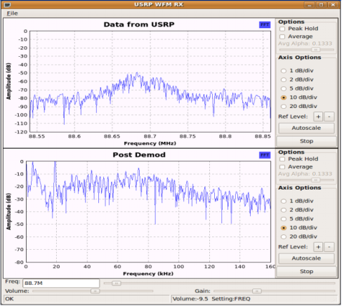

TVRX2使用手册
硬件要求：
1.一台装有ubuntu-9.04系统的电脑。
2.一个USRP1主板。
3.一个TVRX2子板。
4.一个400MHz的天线。
5.一个6V电源。
软件环境：
在ubuntu-9.04系统上安装gnuradio-3.2.2。或者USRP1系统镜像（64MHz或52MHz）
Demo调试：
介绍TVRX

TVRX 接收机是一个基于电视调谐器模块的完全的甚频（VHF）和超高频（UHF）接收系统。频带宽（IF bandwidth）6MHz，频率范围从50MHz到860MHz。有的协调和自动增益控制（AGC）功能可以通过软件控制它的典型噪声系数为8dB。TVRX是唯一不支持MIMO的子板。右图为TVRX子板。
TVRX接收子板需要与USRP1母版接收端结合构成电视调谐接收系统。如下图示：

1、TV_DEMO演示
首先，连接设备与PC，运行Ubuntu系统，打开终端。输入命令：
#lsusrp
查看设备连接情况：

进入usrp目录下：
#cd /usr/local/share/gnuradio/examples/usrp
#ls
如下显示了AM、FM、TV信号的实验python例程：

我们以usrp_tv_rcv.py为例，若想了解其参数配置方式，可执行：
# ./usrp_tv_rcv.py –h
会有详细的配置说明：

运行usrp_tv_rcv.py，实现电视图像信号的接收：
#./usrp_tv_rcv.py –f 535M
下面以TVRX插到A口接收端为例：
#./usrp_tv_rcv.py –R A
手动调节
运行上述命令时，默认的视频格式是PAL。如有接收NTSC视频格式的需求，可作如下更改：
#./usrp_tv_rcv.py –f 535M –ntsc
其中535M是本地的一个电视信号频率值，读者可根据具体情况对该频率值做更改。更改方式有两种，一种通过如上命令修改，另一种通过运行该命令后弹出的用户操作界面修改其频率,同时该图形界面还可调试对比度、亮度、增益。运行命令出现下图：


2、FM_DEMO演示
我们利用TVRX实现FM音频信号的接收，首先查看usrp_wfm_rcv.py的参数配置信息：
#./usrp_wfm_rcv.py –h
出现如下，其对于接收的频率、增益、音量等参数的配置都有着具体的说明。

可运行usrp_wfm_rcv.py，直接在弹出的用户操作界面中对具体参数进行调试：
# ./usrp_wfm_rcv –R A
